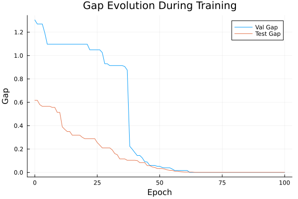
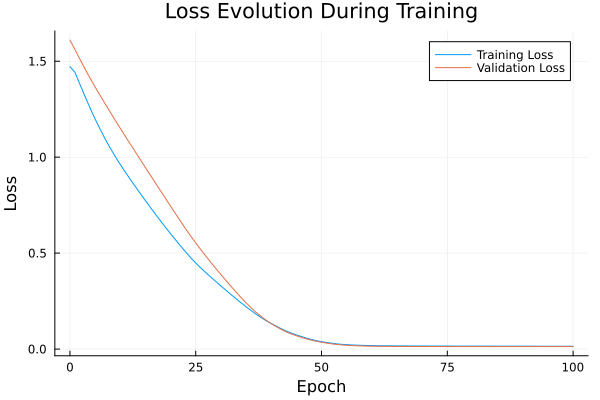

Basic Tutorial: Training with FYL on Argmax Benchmark
This tutorial demonstrates the basic workflow for training a policy using the Perturbed Fenchel-Young Loss algorithm.
Setup
using DecisionFocusedLearningAlgorithms
using DecisionFocusedLearningBenchmarks
using MLUtils: splitobs
using PlotsCreate Benchmark and Data
b = ArgmaxBenchmark()
dataset = generate_dataset(b, 100)
train_data, val_data, test_data = splitobs(dataset; at=(0.3, 0.3, 0.4))(DecisionFocusedLearningBenchmarks.Utils.DataSample{@NamedTuple{}, @NamedTuple{}, Matrix{Float32}, Vector{Float32}, Vector{Float32}}[DataSample(x=Float32[-0.734418 2.06861 … 1.08473 -0.809862; -1.42391 -1.26984 … -2.29187 1.70548; … ; -1.01233 -1.19119 … -0.737715 1.00179; 0.955205 1.05982 … -0.270876 1.01462], θ=Float32[0.277769, -0.958, 0.173838, -1.67675, -0.743458, 1.59128, 1.34999, 0.524148, -2.83629, 2.30201], y=Float32[0.0, 0.0, 0.0, 0.0, 0.0, 0.0, 0.0, 0.0, 0.0, 1.0]), DataSample(x=Float32[-0.206016 0.550593 … -0.307357 0.0492423; 0.390114 -0.136752 … -1.6407 0.761619; … ; -1.69819 0.523491 … 0.263203 0.145598; 0.700518 0.534952 … -0.391207 -0.342043], θ=Float32[0.882758, -0.487571, 1.37798, -1.67688, 1.17313, 0.984405, 1.52878, 1.0294, -1.83263, -0.394165], y=Float32[0.0, 0.0, 0.0, 0.0, 0.0, 0.0, 1.0, 0.0, 0.0, 0.0]), DataSample(x=Float32[-0.216419 -1.07283 … 0.51591 -1.64748; 0.975253 -1.1808 … 0.410609 0.132067; … ; -2.83537 0.673351 … 0.108498 1.28097; -0.153431 -1.87431 … 0.302042 -0.468552], θ=Float32[1.35402, -1.45119, 0.448235, 1.4657, -1.0888, 0.00652868, -2.86732, 0.0630708, 0.547756, 0.941162], y=Float32[0.0, 0.0, 0.0, 1.0, 0.0, 0.0, 0.0, 0.0, 0.0, 0.0]), DataSample(x=Float32[-1.3201 -0.314756 … 0.654076 -0.207966; 0.013102 -0.266016 … -2.04588 0.806654; … ; 0.348492 0.413415 … 0.471802 1.38585; -0.279086 0.516479 … 0.522816 0.957409], θ=Float32[-2.04129, -0.355253, 1.73569, 0.688547, -0.245453, -1.94182, 1.20919, -0.369524, -2.39288, 1.44308], y=Float32[0.0, 0.0, 1.0, 0.0, 0.0, 0.0, 0.0, 0.0, 0.0, 0.0]), DataSample(x=Float32[0.977878 1.12642 … -0.741838 2.6198; 0.356827 -0.692125 … -1.45701 0.674925; … ; 0.369699 1.44713 … -2.42598 -0.216858; -0.659838 1.96313 … 0.424256 -0.471803], θ=Float32[-1.12167, -0.535226, 1.00211, -0.219805, 0.155194, -0.268615, -0.670389, 1.69903, -0.0988606, 0.210844], y=Float32[0.0, 0.0, 0.0, 0.0, 0.0, 0.0, 0.0, 1.0, 0.0, 0.0]), DataSample(x=Float32[0.179094 -0.354642 … 0.0064395 -0.280565; -0.316298 0.979811 … 0.162002 1.58025; … ; -0.15204 -1.24512 … -0.72492 0.998147; 0.913489 0.643172 … -1.27526 -1.25395], θ=Float32[0.259347, 1.36173, 0.602215, 1.8004, 0.591725, -0.724998, -0.752281, 2.11115, -0.500975, 0.0982654], y=Float32[0.0, 0.0, 0.0, 0.0, 0.0, 0.0, 0.0, 1.0, 0.0, 0.0]), DataSample(x=Float32[1.5322 -0.232486 … -0.748424 -0.899242; 0.562239 1.36365 … 0.18921 -0.0985956; … ; -0.219366 0.759185 … -0.28624 -0.395934; -1.80009 1.86214 … 1.08112 -1.17222], θ=Float32[-1.09079, 1.42253, -2.38973, 0.992466, -0.141575, -0.308445, 2.25348, -0.489728, 1.55327, -0.190521], y=Float32[0.0, 0.0, 0.0, 0.0, 0.0, 0.0, 1.0, 0.0, 0.0, 0.0]), DataSample(x=Float32[-1.47501 -0.327249 … 0.639203 0.233027; -0.364978 0.379378 … 0.506395 -1.20716; … ; -0.870442 0.916008 … 0.141175 -0.242914; -0.0292091 -0.285443 … 0.944037 2.27195], θ=Float32[-0.503565, -1.67225, -0.295081, 0.735744, 0.670719, 0.79225, -0.53415, -0.766773, 0.641832, 1.24584], y=Float32[0.0, 0.0, 0.0, 0.0, 0.0, 0.0, 0.0, 0.0, 0.0, 1.0]), DataSample(x=Float32[0.0633186 0.688816 … -0.571811 -1.76676; -0.240484 1.51083 … -0.916414 -0.136726; … ; -1.15958 -1.23041 … 0.671074 -1.0249; -0.234646 -0.285162 … -0.803925 0.355789], θ=Float32[0.285422, 0.701876, 0.809074, 0.179502, -0.0841057, 2.90997, 1.48098, 0.281191, -0.38737, 1.79843], y=Float32[0.0, 0.0, 0.0, 0.0, 0.0, 1.0, 0.0, 0.0, 0.0, 0.0]), DataSample(x=Float32[0.442056 0.433999 … -0.42309 0.0178185; 1.39368 -0.453588 … -0.333228 -1.46335; … ; -0.226812 1.73535 … -1.02103 1.12285; 0.508704 0.926219 … -1.63991 0.929321], θ=Float32[1.37626, -1.299, 0.835036, -0.898611, 2.47779, 2.21974, 0.52242, 1.72337, -0.40971, -1.65774], y=Float32[0.0, 0.0, 0.0, 0.0, 1.0, 0.0, 0.0, 0.0, 0.0, 0.0]) … DataSample(x=Float32[0.867813 -0.240725 … -0.273642 1.65003; -0.990634 0.385619 … -0.242958 -0.668017; … ; 0.782618 1.23004 … -0.64366 -2.55772; -0.606402 -0.221779 … 1.1014 -0.203448], θ=Float32[-2.48282, -0.699491, -0.371464, -2.0985, 0.313981, 1.00465, 3.52102, -1.72671, 0.525899, -0.923771], y=Float32[0.0, 0.0, 0.0, 0.0, 0.0, 0.0, 1.0, 0.0, 0.0, 0.0]), DataSample(x=Float32[1.18616 0.115512 … -1.17817 -0.679695; 0.97237 -0.0115613 … -0.248343 -1.29439; … ; -0.00896154 0.710586 … -0.610197 -0.815937; 1.1774 -0.900023 … -0.0890002 -0.782661], θ=Float32[1.36297, -1.20746, 0.532188, -0.749332, 1.26689, -0.589443, -2.7024, 0.899142, 0.431782, -0.346383], y=Float32[1.0, 0.0, 0.0, 0.0, 0.0, 0.0, 0.0, 0.0, 0.0, 0.0]), DataSample(x=Float32[-0.541094 1.48978 … -0.0573047 -0.761344; -0.784961 1.02643 … 2.81934 -0.641195; … ; 1.4478 -2.0647 … -0.355669 1.36412; -0.19597 0.423488 … -0.196865 -0.396756], θ=Float32[-1.07847, 1.21763, 2.60019, 0.357772, -1.82794, -2.3095, 1.52939, -1.02031, 3.82684, -1.26563], y=Float32[0.0, 0.0, 0.0, 0.0, 0.0, 0.0, 0.0, 0.0, 1.0, 0.0]), DataSample(x=Float32[-0.0437277 0.620102 … 0.140597 -0.683093; -0.154122 -0.788595 … -1.89895 0.745211; … ; 2.21609 -0.702867 … -0.0783787 -0.642732; -0.44147 -0.322894 … -0.655537 0.919284], θ=Float32[-2.81455, 0.366875, -1.05679, 1.09259, 1.35678, 0.593635, -1.22125, 0.447656, -2.22889, 2.72267], y=Float32[0.0, 0.0, 0.0, 0.0, 0.0, 0.0, 0.0, 0.0, 0.0, 1.0]), DataSample(x=Float32[-1.58078 -0.15784 … 1.60305 0.0700932; 0.976641 -0.284187 … 0.163394 -0.0191832; … ; -0.10963 1.43503 … -0.245994 0.580999; 0.0607911 -0.60785 … 1.95794 0.172957], θ=Float32[1.3668, -0.716528, 0.517089, -1.61478, -2.03008, 1.35085, -0.268163, 0.990718, 1.15208, -0.409585], y=Float32[1.0, 0.0, 0.0, 0.0, 0.0, 0.0, 0.0, 0.0, 0.0, 0.0]), DataSample(x=Float32[0.956956 -2.40719 … -0.792066 0.438624; 1.67868 0.0422003 … -1.371 0.0507308; … ; 2.24361 -0.34231 … -0.184582 -0.842559; -1.20843 0.635311 … -0.302331 -1.23937], θ=Float32[-0.550118, 2.5094, -0.0733743, 2.82022, 1.65356, -1.24418, 0.71021, -0.458066, -0.673122, -0.237812], y=Float32[0.0, 0.0, 0.0, 1.0, 0.0, 0.0, 0.0, 0.0, 0.0, 0.0]), DataSample(x=Float32[-0.0615993 0.877661 … -0.0581768 0.586282; -2.29211 -0.232496 … -0.50418 -0.86173; … ; 0.513376 0.465423 … -0.545093 0.172512; -1.45815 0.0780114 … -0.138051 -0.717204], θ=Float32[-4.04973, -1.56645, -0.915546, -0.820809, 0.75841, -1.49619, 0.710288, -2.47953, -0.248451, -2.57707], y=Float32[0.0, 0.0, 0.0, 0.0, 1.0, 0.0, 0.0, 0.0, 0.0, 0.0]), DataSample(x=Float32[0.545605 -0.335782 … 0.773121 0.977386; 0.120802 0.50044 … -1.15833 -0.586578; … ; 0.100873 0.892691 … 0.349828 0.873339; 1.83456 -0.650681 … 0.0108449 0.29203], θ=Float32[1.80973, -0.970843, 0.875417, -1.90394, 1.92167, -0.0303035, -2.03559, -1.19166, -2.27952, -1.96566], y=Float32[0.0, 0.0, 0.0, 0.0, 1.0, 0.0, 0.0, 0.0, 0.0, 0.0]), DataSample(x=Float32[0.988143 0.540575 … 0.574241 0.595022; -0.0174316 -0.826071 … 0.461579 -0.426102; … ; 1.86612 0.764637 … -0.388505 1.23594; 0.610903 0.715056 … -0.672242 -1.03886], θ=Float32[-1.2927, 0.338538, 2.26634, 0.0751401, -0.802711, -2.06315, -0.682627, 0.80224, 0.0464264, -3.07183], y=Float32[0.0, 0.0, 1.0, 0.0, 0.0, 0.0, 0.0, 0.0, 0.0, 0.0]), DataSample(x=Float32[-1.09119 -0.739301 … 1.97564 -0.12864; -0.825998 -0.564863 … -0.345562 0.474529; … ; -0.752031 0.85447 … -0.762673 -1.20076; -0.646302 0.517625 … -0.358462 0.524283], θ=Float32[-0.615028, -0.821347, -1.99466, 1.21823, 2.27263, -3.50809, 0.784219, -2.11905, -0.279769, 1.19374], y=Float32[0.0, 0.0, 0.0, 0.0, 1.0, 0.0, 0.0, 0.0, 0.0, 0.0])], DecisionFocusedLearningBenchmarks.Utils.DataSample{@NamedTuple{}, @NamedTuple{}, Matrix{Float32}, Vector{Float32}, Vector{Float32}}[DataSample(x=Float32[0.229503 -0.558784 … 0.538864 0.400947; -0.881332 -0.939164 … -0.733587 2.22159; … ; 0.380156 -0.591651 … -0.254352 -1.91161; 1.15634 -0.951073 … 0.560445 1.0005], θ=Float32[-0.399393, -1.59495, 3.1225, -3.23735, -0.894778, 0.533799, -3.1465, 0.554615, -2.16674, 3.18961], y=Float32[0.0, 0.0, 0.0, 0.0, 0.0, 0.0, 0.0, 0.0, 0.0, 1.0]), DataSample(x=Float32[0.705627 0.336956 … 0.0747809 0.594356; 0.641681 0.922448 … -0.642236 1.27781; … ; -1.96864 0.553637 … -1.65501 -1.77917; -1.50922 -0.876455 … 0.462811 0.223854], θ=Float32[0.183956, 0.888898, 0.865086, 1.57398, 0.560621, 0.645909, 1.13255, -0.498943, 0.418598, 2.56764], y=Float32[0.0, 0.0, 0.0, 0.0, 0.0, 0.0, 0.0, 0.0, 0.0, 1.0]), DataSample(x=Float32[0.550987 -0.545144 … -0.485344 0.126605; 0.331054 -0.727305 … 0.238905 -1.26411; … ; 0.11013 -0.844695 … -0.111694 1.79301; -0.754034 -2.81454 … -0.517402 0.921637], θ=Float32[-0.914868, -1.76118, -1.62699, -0.0891082, -2.96351, -3.45094, -0.558185, -0.338242, -0.414669, -1.28653], y=Float32[0.0, 0.0, 0.0, 1.0, 0.0, 0.0, 0.0, 0.0, 0.0, 0.0]), DataSample(x=Float32[-1.64308 2.00104 … 1.7944 0.313282; 0.227412 -0.0869252 … -0.3274 0.984285; … ; -2.33367 -1.95066 … 0.373493 -1.01701; 0.801848 -0.17225 … -1.28192 -0.172197], θ=Float32[1.57697, 1.02467, -0.004862, 0.91725, 0.221906, -1.23417, 1.2065, 0.376358, -2.37022, 0.758716], y=Float32[1.0, 0.0, 0.0, 0.0, 0.0, 0.0, 0.0, 0.0, 0.0, 0.0]), DataSample(x=Float32[-0.0788108 -0.750025 … -0.400197 -0.0465871; -0.30601 0.415224 … -1.06768 2.1345; … ; 0.225129 0.677626 … 0.143999 -0.516155; 0.952671 -0.817146 … -0.294681 -0.768112], θ=Float32[0.0841257, 0.922173, 1.02973, 1.06679, 0.0401289, -0.589764, 1.0887, -1.06422, -1.63083, 2.89817], y=Float32[0.0, 0.0, 0.0, 0.0, 0.0, 0.0, 0.0, 0.0, 0.0, 1.0]), DataSample(x=Float32[-0.618197 0.624061 … 0.294333 0.21827; -0.0395195 1.65559 … -0.831512 0.920869; … ; -0.567886 0.723356 … -0.515713 0.248565; 1.31262 0.285142 … 0.850076 0.903552], θ=Float32[1.23082, -0.0821953, 0.323273, -2.90325, 0.158334, 0.202023, -0.151318, -0.422737, -0.649329, 2.0297], y=Float32[0.0, 0.0, 0.0, 0.0, 0.0, 0.0, 0.0, 0.0, 0.0, 1.0]), DataSample(x=Float32[-1.27864 1.56106 … 1.87852 1.23967; 1.063 0.516691 … -0.761823 -1.60741; … ; 0.505851 -0.310882 … 0.5127 -0.796536; 1.81461 -0.571113 … 0.421231 -1.5749], θ=Float32[1.64163, -0.503099, 0.975165, -0.716623, 1.04737, -0.941407, -3.32162, -1.56037, -1.57107, -1.74777], y=Float32[1.0, 0.0, 0.0, 0.0, 0.0, 0.0, 0.0, 0.0, 0.0, 0.0]), DataSample(x=Float32[0.410821 -0.60761 … 1.28935 0.788402; -1.70404 1.08645 … 0.112022 0.439207; … ; 1.22082 2.38923 … -0.264608 -1.1533; 0.588051 0.00849134 … 0.723075 0.723599], θ=Float32[-0.939288, -0.13497, -0.219156, 0.966719, 0.471298, -0.48185, -0.986278, 0.694042, -0.41155, 1.28233], y=Float32[0.0, 0.0, 0.0, 0.0, 0.0, 0.0, 0.0, 0.0, 0.0, 1.0]), DataSample(x=Float32[1.4848 1.00111 … 0.877047 -0.656166; 0.694617 0.305916 … 0.683657 -0.209874; … ; 1.14076 2.03467 … 0.549364 1.95044; 0.0996295 -1.48167 … 0.579075 -0.0152756], θ=Float32[-0.0686807, -4.02675, 0.291689, -1.64116, 0.583441, -0.164699, 0.0719808, -1.37315, -0.52182, -0.77446], y=Float32[0.0, 0.0, 0.0, 0.0, 1.0, 0.0, 0.0, 0.0, 0.0, 0.0]), DataSample(x=Float32[-0.271081 -1.88633 … 0.713092 -0.509231; -0.276955 -0.00988351 … -0.457208 -1.82004; … ; -0.529162 1.59058 … 0.623573 -0.947907; 0.356613 1.76737 … 0.174052 -0.0166923], θ=Float32[-0.628747, 0.743511, -0.476276, -0.552041, 0.955469, 0.694289, -0.621402, 1.13012, 0.0620277, 0.147497], y=Float32[0.0, 0.0, 0.0, 0.0, 0.0, 0.0, 0.0, 1.0, 0.0, 0.0]) … DataSample(x=Float32[-0.582827 1.07223 … 0.309315 -0.262326; -0.0895068 -1.23052 … -0.179204 1.60932; … ; -0.0623975 0.38979 … 1.13717 -1.47987; 0.0284384 0.816659 … 0.67776 -0.0264592], θ=Float32[-0.442512, -2.29289, -1.70088, -0.437771, -0.683644, -3.91525, -0.513548, 0.332592, -0.676658, 1.67952], y=Float32[0.0, 0.0, 0.0, 0.0, 0.0, 0.0, 0.0, 0.0, 0.0, 1.0]), DataSample(x=Float32[-1.40592 1.1305 … -0.0774145 1.05058; -1.02712 -0.105457 … -2.05845 -0.610926; … ; -0.444474 1.19476 … -1.21664 0.736666; -1.28718 -1.22669 … 0.690223 -0.417062], θ=Float32[-0.418446, -2.20968, 1.56891, 0.310709, 0.351263, -0.273001, -0.195765, 0.32749, -1.27866, -2.27696], y=Float32[0.0, 0.0, 1.0, 0.0, 0.0, 0.0, 0.0, 0.0, 0.0, 0.0]), DataSample(x=Float32[0.669777 0.0271643 … 1.08998 2.22672; -0.134582 0.41439 … 2.45377 -1.01898; … ; 0.639792 0.342948 … 0.640295 2.52178; 0.778941 0.613347 … 0.884576 -0.539496], θ=Float32[-0.892027, 0.221368, 0.130717, 1.7003, 1.95139, 2.09766, -0.721707, 0.473813, 2.78541, -3.56963], y=Float32[0.0, 0.0, 0.0, 0.0, 0.0, 0.0, 0.0, 0.0, 1.0, 0.0]), DataSample(x=Float32[1.75542 1.32062 … 0.767881 0.922686; 2.19978 -1.06136 … -1.30013 -0.81022; … ; -2.10266 -0.0249876 … -0.266825 0.0234109; 0.701246 0.130772 … 1.0295 -1.06986], θ=Float32[2.22543, -0.921625, 3.59135, 0.121688, -0.962816, 0.00412711, -0.18583, 3.88261, -0.264776, -1.48794], y=Float32[0.0, 0.0, 0.0, 0.0, 0.0, 0.0, 0.0, 1.0, 0.0, 0.0]), DataSample(x=Float32[0.466332 0.235115 … 2.18496 -1.30669; -0.535572 -0.258287 … 0.103256 0.255666; … ; -1.92096 -0.816566 … -0.697816 -0.723391; -0.194998 -0.659587 … 1.77241 -0.0107364], θ=Float32[-0.0132197, -0.77365, -0.388042, 1.30244, -2.30736, 1.50611, -0.0195481, 0.777545, 1.00388, 0.607948], y=Float32[0.0, 0.0, 0.0, 0.0, 0.0, 1.0, 0.0, 0.0, 0.0, 0.0]), DataSample(x=Float32[0.559788 1.2149 … -1.45917 0.409837; 0.568185 1.55738 … 1.25048 -1.64664; … ; -0.626509 1.79449 … -2.19999 -0.406206; 0.469188 0.600448 … 1.01034 1.99088], θ=Float32[0.630174, -0.0302927, 0.728613, -2.75552, 2.54475, -1.24163, -1.57165, -1.03268, 4.06395, 0.0421669], y=Float32[0.0, 0.0, 0.0, 0.0, 0.0, 0.0, 0.0, 0.0, 1.0, 0.0]), DataSample(x=Float32[-0.107158 -0.217649 … 0.752453 -0.436878; 0.939706 -1.4866 … -0.915012 -0.789444; … ; -0.528778 -1.24818 … 1.14913 0.198335; -1.38626 0.329151 … -0.241248 0.426725], θ=Float32[1.64705, -0.697022, 1.33916, -0.179016, 0.00752768, 1.01767, 0.62959, -0.487398, -2.03736, -1.05744], y=Float32[1.0, 0.0, 0.0, 0.0, 0.0, 0.0, 0.0, 0.0, 0.0, 0.0]), DataSample(x=Float32[0.0727921 -0.822599 … -0.241819 -0.86929; 0.566476 -1.51801 … 1.20784 -1.0336; … ; 2.28445 1.55852 … 1.17888 0.44546; -0.791353 1.17366 … 0.273771 -0.594494], θ=Float32[-0.919099, -1.97446, -1.40681, -0.121849, -0.0817351, 0.753116, -0.74613, -0.634763, 0.71532, -1.23172], y=Float32[0.0, 0.0, 0.0, 0.0, 0.0, 1.0, 0.0, 0.0, 0.0, 0.0]), DataSample(x=Float32[0.215621 0.264034 … -1.30684 0.493852; 0.0714112 -0.41851 … 1.39765 -0.621672; … ; 0.760425 -0.310608 … -1.24029 1.02954; 0.488194 -1.30295 … 0.713205 -1.83547], θ=Float32[1.60381, -1.01995, -1.53303, -0.884687, 0.090259, 0.249969, -2.90271, -2.33103, 2.08819, -1.88742], y=Float32[0.0, 0.0, 0.0, 0.0, 0.0, 0.0, 0.0, 0.0, 1.0, 0.0]), DataSample(x=Float32[0.619202 -2.12522 … 0.549836 0.00339364; -1.0644 -0.427687 … -1.36204 0.650394; … ; 0.0882458 -1.24613 … 1.30056 0.38458; -0.882021 0.507937 … -0.502114 1.41735], θ=Float32[-0.739686, 0.121458, -0.525427, -1.10134, 1.76412, -0.924263, 3.03034, 0.0579339, -3.36578, 0.738455], y=Float32[0.0, 0.0, 0.0, 0.0, 0.0, 0.0, 1.0, 0.0, 0.0, 0.0])], DecisionFocusedLearningBenchmarks.Utils.DataSample{@NamedTuple{}, @NamedTuple{}, Matrix{Float32}, Vector{Float32}, Vector{Float32}}[DataSample(x=Float32[0.404187 0.209076 … -0.923202 0.0958923; -1.03419 -1.53163 … 1.15331 1.30219; … ; 0.518783 0.377541 … -1.85481 0.197624; 2.70796 0.355076 … -1.18413 -0.678647], θ=Float32[0.432967, -0.568004, 0.195777, -0.858753, 1.24803, 0.178929, -0.358089, -0.652452, 1.40833, 0.826182], y=Float32[0.0, 0.0, 0.0, 0.0, 0.0, 0.0, 0.0, 0.0, 1.0, 0.0]), DataSample(x=Float32[2.58284 -0.19876 … -2.02654 -2.6339; -1.33841 -0.728461 … -0.401726 0.236528; … ; -0.541008 -1.16988 … 0.0385164 0.986161; -0.540662 -0.575351 … -1.1131 -1.52356], θ=Float32[-2.34267, 0.608442, -0.0184704, -0.867882, 0.446028, -0.775955, 2.35471, 0.0986993, 0.0376608, -0.819207], y=Float32[0.0, 0.0, 0.0, 0.0, 0.0, 0.0, 1.0, 0.0, 0.0, 0.0]), DataSample(x=Float32[-0.462126 -0.774754 … -0.52514 0.079315; 0.76901 -0.459888 … 2.48663 -0.391719; … ; 1.16253 0.054898 … -1.43071 0.095899; -1.5848 2.02617 … 0.542122 -0.65615], θ=Float32[-0.597262, 1.89512, -0.122144, -0.940704, 0.387418, 1.50735, -1.05697, -3.21955, 3.8342, -1.06753], y=Float32[0.0, 0.0, 0.0, 0.0, 0.0, 0.0, 0.0, 0.0, 1.0, 0.0]), DataSample(x=Float32[-1.58754 0.785609 … 0.478681 0.278771; 0.464802 1.38393 … 0.803909 0.0852652; … ; -0.301069 -2.20948 … -1.01947 -0.0865; -0.983735 0.5892 … -0.0294493 1.34173], θ=Float32[0.474028, 1.16397, 0.0830049, 1.64654, -0.772602, 1.00257, 1.64779, -1.7517, 0.400755, 1.66476], y=Float32[0.0, 0.0, 0.0, 0.0, 0.0, 0.0, 0.0, 0.0, 0.0, 1.0]), DataSample(x=Float32[0.352346 -0.372627 … -1.28666 0.257741; 0.749276 -1.70531 … -0.774799 -0.48269; … ; -0.0235072 -1.79774 … -0.325416 -0.597337; -0.982571 0.901212 … 1.15417 -0.80482], θ=Float32[-0.0260439, -0.579926, 1.08188, 2.48551, -1.75502, -3.40196, -0.566026, -0.0315033, 1.40551, -2.08961], y=Float32[0.0, 0.0, 0.0, 1.0, 0.0, 0.0, 0.0, 0.0, 0.0, 0.0]), DataSample(x=Float32[-1.02338 -0.107314 … 0.342263 0.162258; 0.588657 -0.0156205 … 0.666619 -0.921463; … ; 0.609359 -0.693288 … -1.15581 -0.937883; -0.658725 -0.693435 … 0.444299 0.417655], θ=Float32[-0.417839, -1.13531, 2.1526, 0.529269, -1.0667, -1.2292, 1.81907, -0.99852, 0.941657, -0.747679], y=Float32[0.0, 0.0, 1.0, 0.0, 0.0, 0.0, 0.0, 0.0, 0.0, 0.0]), DataSample(x=Float32[-0.978738 0.373003 … 1.21702 -0.533079; -0.304673 -0.883438 … 1.00507 0.597398; … ; 0.368614 0.276025 … 2.81891 2.50985; -0.336651 -0.573229 … 0.905086 0.330812], θ=Float32[-1.59614, -2.32852, -0.372874, -0.26876, -0.715941, -1.14436, -0.835928, 1.13745, -0.403125, -1.0712], y=Float32[0.0, 0.0, 0.0, 0.0, 0.0, 0.0, 0.0, 1.0, 0.0, 0.0]), DataSample(x=Float32[-0.579705 2.04767 … -1.94523 1.87235; 2.46922 -0.221364 … -0.393015 -0.735979; … ; 2.42666 0.487998 … -0.298636 0.0542354; -1.08796 -0.131809 … -2.04633 -0.180012], θ=Float32[-0.295027, -1.89523, -0.079111, 1.9123, 1.82117, -0.744488, -0.852191, 0.939287, -0.52966, -0.466321], y=Float32[0.0, 0.0, 0.0, 1.0, 0.0, 0.0, 0.0, 0.0, 0.0, 0.0]), DataSample(x=Float32[0.576861 -0.263051 … 0.384878 -0.0990503; 0.496231 -0.87923 … 1.04454 0.447678; … ; 0.479436 2.02763 … 0.160746 -1.83068; 0.1977 -0.00532724 … -0.0573635 0.634572], θ=Float32[0.172535, -1.94071, 2.17788, 0.375487, 0.34614, -0.810601, 2.23682, -0.0965081, 0.662562, 1.72821], y=Float32[0.0, 0.0, 0.0, 0.0, 0.0, 0.0, 1.0, 0.0, 0.0, 0.0]), DataSample(x=Float32[1.01485 0.808166 … -0.292411 -0.645019; 1.14141 -0.527325 … 1.07108 -0.777992; … ; -1.27846 0.791551 … 0.536243 0.219256; 0.798786 0.330312 … -0.453357 -0.757792], θ=Float32[1.2074, -0.0157972, 0.263521, 0.991173, 0.0247871, -0.510391, -1.07338, 0.611635, 0.178047, -0.532886], y=Float32[1.0, 0.0, 0.0, 0.0, 0.0, 0.0, 0.0, 0.0, 0.0, 0.0]) … DataSample(x=Float32[0.403037 1.27754 … 0.255159 0.657717; -0.406774 -0.632199 … 0.690909 -0.191748; … ; 0.966069 0.920184 … 0.758184 -0.404449; 0.186049 -1.08804 … 1.50959 0.858291], θ=Float32[-1.19215, -3.49456, -0.376262, -1.75259, -1.92568, -2.40188, -1.98426, -2.01479, 0.282187, 0.996664], y=Float32[0.0, 0.0, 0.0, 0.0, 0.0, 0.0, 0.0, 0.0, 0.0, 1.0]), DataSample(x=Float32[0.294668 -0.516569 … 0.534172 0.242149; 1.5978 0.732815 … -0.302151 -2.61936; … ; -0.914381 -0.110764 … -1.081 1.55668; 1.47794 1.50369 … -0.519553 0.191256], θ=Float32[2.18444, 0.880347, 0.835991, 2.03149, 0.762743, -0.86373, 2.01323, -0.440705, 0.246398, -2.76371], y=Float32[1.0, 0.0, 0.0, 0.0, 0.0, 0.0, 0.0, 0.0, 0.0, 0.0]), DataSample(x=Float32[-0.300847 0.092983 … -0.232513 -0.669518; -0.301274 0.0554743 … 0.655762 0.570814; … ; -1.82349 1.12652 … 0.213975 0.18627; 0.335571 -0.0892568 … -0.0107669 0.0557192], θ=Float32[0.909633, -1.14396, -1.03273, -0.371048, 1.92561, -0.679112, 1.09572, 1.21222, -0.0131328, 2.07846], y=Float32[0.0, 0.0, 0.0, 0.0, 0.0, 0.0, 0.0, 0.0, 0.0, 1.0]), DataSample(x=Float32[1.0313 -0.540976 … -0.375742 0.382265; 0.464841 0.036459 … -0.852707 0.240453; … ; -0.44154 0.928266 … 1.25783 -0.826704; 1.23319 0.589639 … 1.56513 -0.603459], θ=Float32[1.34947, 0.660398, 3.51515, 1.3542, 0.513137, 1.08634, 0.0530344, 0.398081, -0.388179, -0.658383], y=Float32[0.0, 0.0, 1.0, 0.0, 0.0, 0.0, 0.0, 0.0, 0.0, 0.0]), DataSample(x=Float32[-0.281077 -1.98246 … 0.114092 0.483961; 0.180904 -0.983328 … 0.0579446 0.930093; … ; 0.536346 0.981316 … -1.12823 -0.52137; 1.26668 0.0644447 … -0.516417 -0.812501], θ=Float32[1.76703, -0.892421, -0.127472, 2.07046, -1.25302, 0.0667263, -0.474113, -1.17745, 0.911119, 0.306905], y=Float32[0.0, 0.0, 0.0, 1.0, 0.0, 0.0, 0.0, 0.0, 0.0, 0.0]), DataSample(x=Float32[-0.0816334 0.144399 … 2.17829 -1.2324; 0.336633 0.68373 … 0.212457 0.927642; … ; 0.537776 -1.58066 … -1.53894 -0.422422; 0.951721 0.31368 … -0.714614 0.328595], θ=Float32[0.61745, 1.91393, -0.0973212, -1.83997, -0.222159, 1.76421, -0.11281, 1.05107, -1.92308, 1.9498], y=Float32[0.0, 0.0, 0.0, 0.0, 0.0, 0.0, 0.0, 0.0, 0.0, 1.0]), DataSample(x=Float32[-1.60438 0.367824 … 0.164434 -0.0559754; 0.194907 1.25225 … 0.302789 -0.380469; … ; -1.89029 0.210977 … -1.57292 -1.16028; 0.905684 -0.0347848 … -0.203838 1.33941], θ=Float32[1.93543, 1.47291, 0.0509933, 0.376139, 0.0139133, -0.83571, -2.56575, -0.493973, 1.57302, 0.971475], y=Float32[1.0, 0.0, 0.0, 0.0, 0.0, 0.0, 0.0, 0.0, 0.0, 0.0]), DataSample(x=Float32[1.79812 0.973325 … -0.346523 0.0571234; 0.799674 -1.65684 … -0.319905 -0.486533; … ; 0.284424 1.02705 … 0.0150193 1.08681; -1.22872 -1.06013 … -0.913033 1.29784], θ=Float32[0.310672, -1.3642, -0.460827, -0.123616, 1.54519, -0.557955, 2.60329, 1.10134, -1.37432, -0.0548429], y=Float32[0.0, 0.0, 0.0, 0.0, 0.0, 0.0, 1.0, 0.0, 0.0, 0.0]), DataSample(x=Float32[-0.49464 -0.578787 … 0.311997 -1.52917; 1.46442 -0.225585 … -0.642962 -0.116554; … ; 0.198937 -0.312418 … -0.709224 -0.432647; -1.73237 -0.92612 … 0.137299 -1.63755], θ=Float32[0.251376, -0.310747, 0.482221, -1.70654, -0.561365, 2.75454, -2.28982, 2.0512, -0.271517, -0.216137], y=Float32[0.0, 0.0, 0.0, 0.0, 0.0, 1.0, 0.0, 0.0, 0.0, 0.0]), DataSample(x=Float32[1.20003 -2.88369 … -0.315649 -0.769974; -1.46268 -0.590296 … 0.611391 0.0981389; … ; -1.13505 0.267991 … -0.154632 0.907526; -1.12514 -0.638105 … 0.724381 -0.307961], θ=Float32[-0.444914, 0.135581, -0.422466, -1.26262, 0.200112, 0.367751, 0.470013, 4.56617, 1.25288, 0.15112], y=Float32[0.0, 0.0, 0.0, 0.0, 0.0, 0.0, 0.0, 1.0, 0.0, 0.0])], DecisionFocusedLearningBenchmarks.Utils.DataSample{@NamedTuple{}, @NamedTuple{}, Matrix{Float32}, Vector{Float32}, Vector{Float32}}[])Create Policy
model = generate_statistical_model(b; seed=0)
maximizer = generate_maximizer(b)
policy = DFLPolicy(model, maximizer)DFLPolicy{Flux.Chain{Tuple{Flux.Dense{typeof(identity), Matrix{Float32}, Bool}, typeof(vec)}}, typeof(DecisionFocusedLearningBenchmarks.Argmax.one_hot_argmax)}(Chain(Dense(5 => 1; bias=false), vec), DecisionFocusedLearningBenchmarks.Argmax.one_hot_argmax)Configure Algorithm
algorithm = PerturbedFenchelYoungLossImitation(;
nb_samples=10, ε=0.1, threaded=true, seed=0
)PerturbedFenchelYoungLossImitation{Optimisers.Adam{Float64, Tuple{Float64, Float64}, Float64}, Int64}(10, 0.1, true, Optimisers.Adam(eta=0.001, beta=(0.9, 0.999), epsilon=1.0e-8), 0, false)Define Metrics to track during training
validation_loss_metric = FYLLossMetric(val_data, :validation_loss)
val_gap_metric = FunctionMetric(:val_gap, val_data) do ctx, data
compute_gap(b, data, ctx.policy.statistical_model, ctx.policy.maximizer)
end
test_gap_metric = FunctionMetric(:test_gap, test_data) do ctx, data
compute_gap(b, data, ctx.policy.statistical_model, ctx.policy.maximizer)
end
metrics = (validation_loss_metric, val_gap_metric, test_gap_metric)(FYLLossMetric{SubArray{DecisionFocusedLearningBenchmarks.Utils.DataSample{@NamedTuple{}, @NamedTuple{}, Matrix{Float32}, Vector{Float32}, Vector{Float32}}, 1, Vector{DecisionFocusedLearningBenchmarks.Utils.DataSample{@NamedTuple{}, @NamedTuple{}, Matrix{Float32}, Vector{Float32}, Vector{Float32}}}, Tuple{UnitRange{Int64}}, true}}(DecisionFocusedLearningBenchmarks.Utils.DataSample{@NamedTuple{}, @NamedTuple{}, Matrix{Float32}, Vector{Float32}, Vector{Float32}}[DataSample(x=Float32[0.229503 -0.558784 … 0.538864 0.400947; -0.881332 -0.939164 … -0.733587 2.22159; … ; 0.380156 -0.591651 … -0.254352 -1.91161; 1.15634 -0.951073 … 0.560445 1.0005], θ=Float32[-0.399393, -1.59495, 3.1225, -3.23735, -0.894778, 0.533799, -3.1465, 0.554615, -2.16674, 3.18961], y=Float32[0.0, 0.0, 0.0, 0.0, 0.0, 0.0, 0.0, 0.0, 0.0, 1.0]), DataSample(x=Float32[0.705627 0.336956 … 0.0747809 0.594356; 0.641681 0.922448 … -0.642236 1.27781; … ; -1.96864 0.553637 … -1.65501 -1.77917; -1.50922 -0.876455 … 0.462811 0.223854], θ=Float32[0.183956, 0.888898, 0.865086, 1.57398, 0.560621, 0.645909, 1.13255, -0.498943, 0.418598, 2.56764], y=Float32[0.0, 0.0, 0.0, 0.0, 0.0, 0.0, 0.0, 0.0, 0.0, 1.0]), DataSample(x=Float32[0.550987 -0.545144 … -0.485344 0.126605; 0.331054 -0.727305 … 0.238905 -1.26411; … ; 0.11013 -0.844695 … -0.111694 1.79301; -0.754034 -2.81454 … -0.517402 0.921637], θ=Float32[-0.914868, -1.76118, -1.62699, -0.0891082, -2.96351, -3.45094, -0.558185, -0.338242, -0.414669, -1.28653], y=Float32[0.0, 0.0, 0.0, 1.0, 0.0, 0.0, 0.0, 0.0, 0.0, 0.0]), DataSample(x=Float32[-1.64308 2.00104 … 1.7944 0.313282; 0.227412 -0.0869252 … -0.3274 0.984285; … ; -2.33367 -1.95066 … 0.373493 -1.01701; 0.801848 -0.17225 … -1.28192 -0.172197], θ=Float32[1.57697, 1.02467, -0.004862, 0.91725, 0.221906, -1.23417, 1.2065, 0.376358, -2.37022, 0.758716], y=Float32[1.0, 0.0, 0.0, 0.0, 0.0, 0.0, 0.0, 0.0, 0.0, 0.0]), DataSample(x=Float32[-0.0788108 -0.750025 … -0.400197 -0.0465871; -0.30601 0.415224 … -1.06768 2.1345; … ; 0.225129 0.677626 … 0.143999 -0.516155; 0.952671 -0.817146 … -0.294681 -0.768112], θ=Float32[0.0841257, 0.922173, 1.02973, 1.06679, 0.0401289, -0.589764, 1.0887, -1.06422, -1.63083, 2.89817], y=Float32[0.0, 0.0, 0.0, 0.0, 0.0, 0.0, 0.0, 0.0, 0.0, 1.0]), DataSample(x=Float32[-0.618197 0.624061 … 0.294333 0.21827; -0.0395195 1.65559 … -0.831512 0.920869; … ; -0.567886 0.723356 … -0.515713 0.248565; 1.31262 0.285142 … 0.850076 0.903552], θ=Float32[1.23082, -0.0821953, 0.323273, -2.90325, 0.158334, 0.202023, -0.151318, -0.422737, -0.649329, 2.0297], y=Float32[0.0, 0.0, 0.0, 0.0, 0.0, 0.0, 0.0, 0.0, 0.0, 1.0]), DataSample(x=Float32[-1.27864 1.56106 … 1.87852 1.23967; 1.063 0.516691 … -0.761823 -1.60741; … ; 0.505851 -0.310882 … 0.5127 -0.796536; 1.81461 -0.571113 … 0.421231 -1.5749], θ=Float32[1.64163, -0.503099, 0.975165, -0.716623, 1.04737, -0.941407, -3.32162, -1.56037, -1.57107, -1.74777], y=Float32[1.0, 0.0, 0.0, 0.0, 0.0, 0.0, 0.0, 0.0, 0.0, 0.0]), DataSample(x=Float32[0.410821 -0.60761 … 1.28935 0.788402; -1.70404 1.08645 … 0.112022 0.439207; … ; 1.22082 2.38923 … -0.264608 -1.1533; 0.588051 0.00849134 … 0.723075 0.723599], θ=Float32[-0.939288, -0.13497, -0.219156, 0.966719, 0.471298, -0.48185, -0.986278, 0.694042, -0.41155, 1.28233], y=Float32[0.0, 0.0, 0.0, 0.0, 0.0, 0.0, 0.0, 0.0, 0.0, 1.0]), DataSample(x=Float32[1.4848 1.00111 … 0.877047 -0.656166; 0.694617 0.305916 … 0.683657 -0.209874; … ; 1.14076 2.03467 … 0.549364 1.95044; 0.0996295 -1.48167 … 0.579075 -0.0152756], θ=Float32[-0.0686807, -4.02675, 0.291689, -1.64116, 0.583441, -0.164699, 0.0719808, -1.37315, -0.52182, -0.77446], y=Float32[0.0, 0.0, 0.0, 0.0, 1.0, 0.0, 0.0, 0.0, 0.0, 0.0]), DataSample(x=Float32[-0.271081 -1.88633 … 0.713092 -0.509231; -0.276955 -0.00988351 … -0.457208 -1.82004; … ; -0.529162 1.59058 … 0.623573 -0.947907; 0.356613 1.76737 … 0.174052 -0.0166923], θ=Float32[-0.628747, 0.743511, -0.476276, -0.552041, 0.955469, 0.694289, -0.621402, 1.13012, 0.0620277, 0.147497], y=Float32[0.0, 0.0, 0.0, 0.0, 0.0, 0.0, 0.0, 1.0, 0.0, 0.0]) … DataSample(x=Float32[-0.582827 1.07223 … 0.309315 -0.262326; -0.0895068 -1.23052 … -0.179204 1.60932; … ; -0.0623975 0.38979 … 1.13717 -1.47987; 0.0284384 0.816659 … 0.67776 -0.0264592], θ=Float32[-0.442512, -2.29289, -1.70088, -0.437771, -0.683644, -3.91525, -0.513548, 0.332592, -0.676658, 1.67952], y=Float32[0.0, 0.0, 0.0, 0.0, 0.0, 0.0, 0.0, 0.0, 0.0, 1.0]), DataSample(x=Float32[-1.40592 1.1305 … -0.0774145 1.05058; -1.02712 -0.105457 … -2.05845 -0.610926; … ; -0.444474 1.19476 … -1.21664 0.736666; -1.28718 -1.22669 … 0.690223 -0.417062], θ=Float32[-0.418446, -2.20968, 1.56891, 0.310709, 0.351263, -0.273001, -0.195765, 0.32749, -1.27866, -2.27696], y=Float32[0.0, 0.0, 1.0, 0.0, 0.0, 0.0, 0.0, 0.0, 0.0, 0.0]), DataSample(x=Float32[0.669777 0.0271643 … 1.08998 2.22672; -0.134582 0.41439 … 2.45377 -1.01898; … ; 0.639792 0.342948 … 0.640295 2.52178; 0.778941 0.613347 … 0.884576 -0.539496], θ=Float32[-0.892027, 0.221368, 0.130717, 1.7003, 1.95139, 2.09766, -0.721707, 0.473813, 2.78541, -3.56963], y=Float32[0.0, 0.0, 0.0, 0.0, 0.0, 0.0, 0.0, 0.0, 1.0, 0.0]), DataSample(x=Float32[1.75542 1.32062 … 0.767881 0.922686; 2.19978 -1.06136 … -1.30013 -0.81022; … ; -2.10266 -0.0249876 … -0.266825 0.0234109; 0.701246 0.130772 … 1.0295 -1.06986], θ=Float32[2.22543, -0.921625, 3.59135, 0.121688, -0.962816, 0.00412711, -0.18583, 3.88261, -0.264776, -1.48794], y=Float32[0.0, 0.0, 0.0, 0.0, 0.0, 0.0, 0.0, 1.0, 0.0, 0.0]), DataSample(x=Float32[0.466332 0.235115 … 2.18496 -1.30669; -0.535572 -0.258287 … 0.103256 0.255666; … ; -1.92096 -0.816566 … -0.697816 -0.723391; -0.194998 -0.659587 … 1.77241 -0.0107364], θ=Float32[-0.0132197, -0.77365, -0.388042, 1.30244, -2.30736, 1.50611, -0.0195481, 0.777545, 1.00388, 0.607948], y=Float32[0.0, 0.0, 0.0, 0.0, 0.0, 1.0, 0.0, 0.0, 0.0, 0.0]), DataSample(x=Float32[0.559788 1.2149 … -1.45917 0.409837; 0.568185 1.55738 … 1.25048 -1.64664; … ; -0.626509 1.79449 … -2.19999 -0.406206; 0.469188 0.600448 … 1.01034 1.99088], θ=Float32[0.630174, -0.0302927, 0.728613, -2.75552, 2.54475, -1.24163, -1.57165, -1.03268, 4.06395, 0.0421669], y=Float32[0.0, 0.0, 0.0, 0.0, 0.0, 0.0, 0.0, 0.0, 1.0, 0.0]), DataSample(x=Float32[-0.107158 -0.217649 … 0.752453 -0.436878; 0.939706 -1.4866 … -0.915012 -0.789444; … ; -0.528778 -1.24818 … 1.14913 0.198335; -1.38626 0.329151 … -0.241248 0.426725], θ=Float32[1.64705, -0.697022, 1.33916, -0.179016, 0.00752768, 1.01767, 0.62959, -0.487398, -2.03736, -1.05744], y=Float32[1.0, 0.0, 0.0, 0.0, 0.0, 0.0, 0.0, 0.0, 0.0, 0.0]), DataSample(x=Float32[0.0727921 -0.822599 … -0.241819 -0.86929; 0.566476 -1.51801 … 1.20784 -1.0336; … ; 2.28445 1.55852 … 1.17888 0.44546; -0.791353 1.17366 … 0.273771 -0.594494], θ=Float32[-0.919099, -1.97446, -1.40681, -0.121849, -0.0817351, 0.753116, -0.74613, -0.634763, 0.71532, -1.23172], y=Float32[0.0, 0.0, 0.0, 0.0, 0.0, 1.0, 0.0, 0.0, 0.0, 0.0]), DataSample(x=Float32[0.215621 0.264034 … -1.30684 0.493852; 0.0714112 -0.41851 … 1.39765 -0.621672; … ; 0.760425 -0.310608 … -1.24029 1.02954; 0.488194 -1.30295 … 0.713205 -1.83547], θ=Float32[1.60381, -1.01995, -1.53303, -0.884687, 0.090259, 0.249969, -2.90271, -2.33103, 2.08819, -1.88742], y=Float32[0.0, 0.0, 0.0, 0.0, 0.0, 0.0, 0.0, 0.0, 1.0, 0.0]), DataSample(x=Float32[0.619202 -2.12522 … 0.549836 0.00339364; -1.0644 -0.427687 … -1.36204 0.650394; … ; 0.0882458 -1.24613 … 1.30056 0.38458; -0.882021 0.507937 … -0.502114 1.41735], θ=Float32[-0.739686, 0.121458, -0.525427, -1.10134, 1.76412, -0.924263, 3.03034, 0.0579339, -3.36578, 0.738455], y=Float32[0.0, 0.0, 0.0, 0.0, 0.0, 0.0, 1.0, 0.0, 0.0, 0.0])], LossAccumulator(:validation_loss, 0.0, 0)), FunctionMetric{Main.var"#2#3", SubArray{DecisionFocusedLearningBenchmarks.Utils.DataSample{@NamedTuple{}, @NamedTuple{}, Matrix{Float32}, Vector{Float32}, Vector{Float32}}, 1, Vector{DecisionFocusedLearningBenchmarks.Utils.DataSample{@NamedTuple{}, @NamedTuple{}, Matrix{Float32}, Vector{Float32}, Vector{Float32}}}, Tuple{UnitRange{Int64}}, true}}(Main.var"#2#3"(), :val_gap, DecisionFocusedLearningBenchmarks.Utils.DataSample{@NamedTuple{}, @NamedTuple{}, Matrix{Float32}, Vector{Float32}, Vector{Float32}}[DataSample(x=Float32[0.229503 -0.558784 … 0.538864 0.400947; -0.881332 -0.939164 … -0.733587 2.22159; … ; 0.380156 -0.591651 … -0.254352 -1.91161; 1.15634 -0.951073 … 0.560445 1.0005], θ=Float32[-0.399393, -1.59495, 3.1225, -3.23735, -0.894778, 0.533799, -3.1465, 0.554615, -2.16674, 3.18961], y=Float32[0.0, 0.0, 0.0, 0.0, 0.0, 0.0, 0.0, 0.0, 0.0, 1.0]), DataSample(x=Float32[0.705627 0.336956 … 0.0747809 0.594356; 0.641681 0.922448 … -0.642236 1.27781; … ; -1.96864 0.553637 … -1.65501 -1.77917; -1.50922 -0.876455 … 0.462811 0.223854], θ=Float32[0.183956, 0.888898, 0.865086, 1.57398, 0.560621, 0.645909, 1.13255, -0.498943, 0.418598, 2.56764], y=Float32[0.0, 0.0, 0.0, 0.0, 0.0, 0.0, 0.0, 0.0, 0.0, 1.0]), DataSample(x=Float32[0.550987 -0.545144 … -0.485344 0.126605; 0.331054 -0.727305 … 0.238905 -1.26411; … ; 0.11013 -0.844695 … -0.111694 1.79301; -0.754034 -2.81454 … -0.517402 0.921637], θ=Float32[-0.914868, -1.76118, -1.62699, -0.0891082, -2.96351, -3.45094, -0.558185, -0.338242, -0.414669, -1.28653], y=Float32[0.0, 0.0, 0.0, 1.0, 0.0, 0.0, 0.0, 0.0, 0.0, 0.0]), DataSample(x=Float32[-1.64308 2.00104 … 1.7944 0.313282; 0.227412 -0.0869252 … -0.3274 0.984285; … ; -2.33367 -1.95066 … 0.373493 -1.01701; 0.801848 -0.17225 … -1.28192 -0.172197], θ=Float32[1.57697, 1.02467, -0.004862, 0.91725, 0.221906, -1.23417, 1.2065, 0.376358, -2.37022, 0.758716], y=Float32[1.0, 0.0, 0.0, 0.0, 0.0, 0.0, 0.0, 0.0, 0.0, 0.0]), DataSample(x=Float32[-0.0788108 -0.750025 … -0.400197 -0.0465871; -0.30601 0.415224 … -1.06768 2.1345; … ; 0.225129 0.677626 … 0.143999 -0.516155; 0.952671 -0.817146 … -0.294681 -0.768112], θ=Float32[0.0841257, 0.922173, 1.02973, 1.06679, 0.0401289, -0.589764, 1.0887, -1.06422, -1.63083, 2.89817], y=Float32[0.0, 0.0, 0.0, 0.0, 0.0, 0.0, 0.0, 0.0, 0.0, 1.0]), DataSample(x=Float32[-0.618197 0.624061 … 0.294333 0.21827; -0.0395195 1.65559 … -0.831512 0.920869; … ; -0.567886 0.723356 … -0.515713 0.248565; 1.31262 0.285142 … 0.850076 0.903552], θ=Float32[1.23082, -0.0821953, 0.323273, -2.90325, 0.158334, 0.202023, -0.151318, -0.422737, -0.649329, 2.0297], y=Float32[0.0, 0.0, 0.0, 0.0, 0.0, 0.0, 0.0, 0.0, 0.0, 1.0]), DataSample(x=Float32[-1.27864 1.56106 … 1.87852 1.23967; 1.063 0.516691 … -0.761823 -1.60741; … ; 0.505851 -0.310882 … 0.5127 -0.796536; 1.81461 -0.571113 … 0.421231 -1.5749], θ=Float32[1.64163, -0.503099, 0.975165, -0.716623, 1.04737, -0.941407, -3.32162, -1.56037, -1.57107, -1.74777], y=Float32[1.0, 0.0, 0.0, 0.0, 0.0, 0.0, 0.0, 0.0, 0.0, 0.0]), DataSample(x=Float32[0.410821 -0.60761 … 1.28935 0.788402; -1.70404 1.08645 … 0.112022 0.439207; … ; 1.22082 2.38923 … -0.264608 -1.1533; 0.588051 0.00849134 … 0.723075 0.723599], θ=Float32[-0.939288, -0.13497, -0.219156, 0.966719, 0.471298, -0.48185, -0.986278, 0.694042, -0.41155, 1.28233], y=Float32[0.0, 0.0, 0.0, 0.0, 0.0, 0.0, 0.0, 0.0, 0.0, 1.0]), DataSample(x=Float32[1.4848 1.00111 … 0.877047 -0.656166; 0.694617 0.305916 … 0.683657 -0.209874; … ; 1.14076 2.03467 … 0.549364 1.95044; 0.0996295 -1.48167 … 0.579075 -0.0152756], θ=Float32[-0.0686807, -4.02675, 0.291689, -1.64116, 0.583441, -0.164699, 0.0719808, -1.37315, -0.52182, -0.77446], y=Float32[0.0, 0.0, 0.0, 0.0, 1.0, 0.0, 0.0, 0.0, 0.0, 0.0]), DataSample(x=Float32[-0.271081 -1.88633 … 0.713092 -0.509231; -0.276955 -0.00988351 … -0.457208 -1.82004; … ; -0.529162 1.59058 … 0.623573 -0.947907; 0.356613 1.76737 … 0.174052 -0.0166923], θ=Float32[-0.628747, 0.743511, -0.476276, -0.552041, 0.955469, 0.694289, -0.621402, 1.13012, 0.0620277, 0.147497], y=Float32[0.0, 0.0, 0.0, 0.0, 0.0, 0.0, 0.0, 1.0, 0.0, 0.0]) … DataSample(x=Float32[-0.582827 1.07223 … 0.309315 -0.262326; -0.0895068 -1.23052 … -0.179204 1.60932; … ; -0.0623975 0.38979 … 1.13717 -1.47987; 0.0284384 0.816659 … 0.67776 -0.0264592], θ=Float32[-0.442512, -2.29289, -1.70088, -0.437771, -0.683644, -3.91525, -0.513548, 0.332592, -0.676658, 1.67952], y=Float32[0.0, 0.0, 0.0, 0.0, 0.0, 0.0, 0.0, 0.0, 0.0, 1.0]), DataSample(x=Float32[-1.40592 1.1305 … -0.0774145 1.05058; -1.02712 -0.105457 … -2.05845 -0.610926; … ; -0.444474 1.19476 … -1.21664 0.736666; -1.28718 -1.22669 … 0.690223 -0.417062], θ=Float32[-0.418446, -2.20968, 1.56891, 0.310709, 0.351263, -0.273001, -0.195765, 0.32749, -1.27866, -2.27696], y=Float32[0.0, 0.0, 1.0, 0.0, 0.0, 0.0, 0.0, 0.0, 0.0, 0.0]), DataSample(x=Float32[0.669777 0.0271643 … 1.08998 2.22672; -0.134582 0.41439 … 2.45377 -1.01898; … ; 0.639792 0.342948 … 0.640295 2.52178; 0.778941 0.613347 … 0.884576 -0.539496], θ=Float32[-0.892027, 0.221368, 0.130717, 1.7003, 1.95139, 2.09766, -0.721707, 0.473813, 2.78541, -3.56963], y=Float32[0.0, 0.0, 0.0, 0.0, 0.0, 0.0, 0.0, 0.0, 1.0, 0.0]), DataSample(x=Float32[1.75542 1.32062 … 0.767881 0.922686; 2.19978 -1.06136 … -1.30013 -0.81022; … ; -2.10266 -0.0249876 … -0.266825 0.0234109; 0.701246 0.130772 … 1.0295 -1.06986], θ=Float32[2.22543, -0.921625, 3.59135, 0.121688, -0.962816, 0.00412711, -0.18583, 3.88261, -0.264776, -1.48794], y=Float32[0.0, 0.0, 0.0, 0.0, 0.0, 0.0, 0.0, 1.0, 0.0, 0.0]), DataSample(x=Float32[0.466332 0.235115 … 2.18496 -1.30669; -0.535572 -0.258287 … 0.103256 0.255666; … ; -1.92096 -0.816566 … -0.697816 -0.723391; -0.194998 -0.659587 … 1.77241 -0.0107364], θ=Float32[-0.0132197, -0.77365, -0.388042, 1.30244, -2.30736, 1.50611, -0.0195481, 0.777545, 1.00388, 0.607948], y=Float32[0.0, 0.0, 0.0, 0.0, 0.0, 1.0, 0.0, 0.0, 0.0, 0.0]), DataSample(x=Float32[0.559788 1.2149 … -1.45917 0.409837; 0.568185 1.55738 … 1.25048 -1.64664; … ; -0.626509 1.79449 … -2.19999 -0.406206; 0.469188 0.600448 … 1.01034 1.99088], θ=Float32[0.630174, -0.0302927, 0.728613, -2.75552, 2.54475, -1.24163, -1.57165, -1.03268, 4.06395, 0.0421669], y=Float32[0.0, 0.0, 0.0, 0.0, 0.0, 0.0, 0.0, 0.0, 1.0, 0.0]), DataSample(x=Float32[-0.107158 -0.217649 … 0.752453 -0.436878; 0.939706 -1.4866 … -0.915012 -0.789444; … ; -0.528778 -1.24818 … 1.14913 0.198335; -1.38626 0.329151 … -0.241248 0.426725], θ=Float32[1.64705, -0.697022, 1.33916, -0.179016, 0.00752768, 1.01767, 0.62959, -0.487398, -2.03736, -1.05744], y=Float32[1.0, 0.0, 0.0, 0.0, 0.0, 0.0, 0.0, 0.0, 0.0, 0.0]), DataSample(x=Float32[0.0727921 -0.822599 … -0.241819 -0.86929; 0.566476 -1.51801 … 1.20784 -1.0336; … ; 2.28445 1.55852 … 1.17888 0.44546; -0.791353 1.17366 … 0.273771 -0.594494], θ=Float32[-0.919099, -1.97446, -1.40681, -0.121849, -0.0817351, 0.753116, -0.74613, -0.634763, 0.71532, -1.23172], y=Float32[0.0, 0.0, 0.0, 0.0, 0.0, 1.0, 0.0, 0.0, 0.0, 0.0]), DataSample(x=Float32[0.215621 0.264034 … -1.30684 0.493852; 0.0714112 -0.41851 … 1.39765 -0.621672; … ; 0.760425 -0.310608 … -1.24029 1.02954; 0.488194 -1.30295 … 0.713205 -1.83547], θ=Float32[1.60381, -1.01995, -1.53303, -0.884687, 0.090259, 0.249969, -2.90271, -2.33103, 2.08819, -1.88742], y=Float32[0.0, 0.0, 0.0, 0.0, 0.0, 0.0, 0.0, 0.0, 1.0, 0.0]), DataSample(x=Float32[0.619202 -2.12522 … 0.549836 0.00339364; -1.0644 -0.427687 … -1.36204 0.650394; … ; 0.0882458 -1.24613 … 1.30056 0.38458; -0.882021 0.507937 … -0.502114 1.41735], θ=Float32[-0.739686, 0.121458, -0.525427, -1.10134, 1.76412, -0.924263, 3.03034, 0.0579339, -3.36578, 0.738455], y=Float32[0.0, 0.0, 0.0, 0.0, 0.0, 0.0, 1.0, 0.0, 0.0, 0.0])]), FunctionMetric{Main.var"#5#6", SubArray{DecisionFocusedLearningBenchmarks.Utils.DataSample{@NamedTuple{}, @NamedTuple{}, Matrix{Float32}, Vector{Float32}, Vector{Float32}}, 1, Vector{DecisionFocusedLearningBenchmarks.Utils.DataSample{@NamedTuple{}, @NamedTuple{}, Matrix{Float32}, Vector{Float32}, Vector{Float32}}}, Tuple{UnitRange{Int64}}, true}}(Main.var"#5#6"(), :test_gap, DecisionFocusedLearningBenchmarks.Utils.DataSample{@NamedTuple{}, @NamedTuple{}, Matrix{Float32}, Vector{Float32}, Vector{Float32}}[DataSample(x=Float32[0.404187 0.209076 … -0.923202 0.0958923; -1.03419 -1.53163 … 1.15331 1.30219; … ; 0.518783 0.377541 … -1.85481 0.197624; 2.70796 0.355076 … -1.18413 -0.678647], θ=Float32[0.432967, -0.568004, 0.195777, -0.858753, 1.24803, 0.178929, -0.358089, -0.652452, 1.40833, 0.826182], y=Float32[0.0, 0.0, 0.0, 0.0, 0.0, 0.0, 0.0, 0.0, 1.0, 0.0]), DataSample(x=Float32[2.58284 -0.19876 … -2.02654 -2.6339; -1.33841 -0.728461 … -0.401726 0.236528; … ; -0.541008 -1.16988 … 0.0385164 0.986161; -0.540662 -0.575351 … -1.1131 -1.52356], θ=Float32[-2.34267, 0.608442, -0.0184704, -0.867882, 0.446028, -0.775955, 2.35471, 0.0986993, 0.0376608, -0.819207], y=Float32[0.0, 0.0, 0.0, 0.0, 0.0, 0.0, 1.0, 0.0, 0.0, 0.0]), DataSample(x=Float32[-0.462126 -0.774754 … -0.52514 0.079315; 0.76901 -0.459888 … 2.48663 -0.391719; … ; 1.16253 0.054898 … -1.43071 0.095899; -1.5848 2.02617 … 0.542122 -0.65615], θ=Float32[-0.597262, 1.89512, -0.122144, -0.940704, 0.387418, 1.50735, -1.05697, -3.21955, 3.8342, -1.06753], y=Float32[0.0, 0.0, 0.0, 0.0, 0.0, 0.0, 0.0, 0.0, 1.0, 0.0]), DataSample(x=Float32[-1.58754 0.785609 … 0.478681 0.278771; 0.464802 1.38393 … 0.803909 0.0852652; … ; -0.301069 -2.20948 … -1.01947 -0.0865; -0.983735 0.5892 … -0.0294493 1.34173], θ=Float32[0.474028, 1.16397, 0.0830049, 1.64654, -0.772602, 1.00257, 1.64779, -1.7517, 0.400755, 1.66476], y=Float32[0.0, 0.0, 0.0, 0.0, 0.0, 0.0, 0.0, 0.0, 0.0, 1.0]), DataSample(x=Float32[0.352346 -0.372627 … -1.28666 0.257741; 0.749276 -1.70531 … -0.774799 -0.48269; … ; -0.0235072 -1.79774 … -0.325416 -0.597337; -0.982571 0.901212 … 1.15417 -0.80482], θ=Float32[-0.0260439, -0.579926, 1.08188, 2.48551, -1.75502, -3.40196, -0.566026, -0.0315033, 1.40551, -2.08961], y=Float32[0.0, 0.0, 0.0, 1.0, 0.0, 0.0, 0.0, 0.0, 0.0, 0.0]), DataSample(x=Float32[-1.02338 -0.107314 … 0.342263 0.162258; 0.588657 -0.0156205 … 0.666619 -0.921463; … ; 0.609359 -0.693288 … -1.15581 -0.937883; -0.658725 -0.693435 … 0.444299 0.417655], θ=Float32[-0.417839, -1.13531, 2.1526, 0.529269, -1.0667, -1.2292, 1.81907, -0.99852, 0.941657, -0.747679], y=Float32[0.0, 0.0, 1.0, 0.0, 0.0, 0.0, 0.0, 0.0, 0.0, 0.0]), DataSample(x=Float32[-0.978738 0.373003 … 1.21702 -0.533079; -0.304673 -0.883438 … 1.00507 0.597398; … ; 0.368614 0.276025 … 2.81891 2.50985; -0.336651 -0.573229 … 0.905086 0.330812], θ=Float32[-1.59614, -2.32852, -0.372874, -0.26876, -0.715941, -1.14436, -0.835928, 1.13745, -0.403125, -1.0712], y=Float32[0.0, 0.0, 0.0, 0.0, 0.0, 0.0, 0.0, 1.0, 0.0, 0.0]), DataSample(x=Float32[-0.579705 2.04767 … -1.94523 1.87235; 2.46922 -0.221364 … -0.393015 -0.735979; … ; 2.42666 0.487998 … -0.298636 0.0542354; -1.08796 -0.131809 … -2.04633 -0.180012], θ=Float32[-0.295027, -1.89523, -0.079111, 1.9123, 1.82117, -0.744488, -0.852191, 0.939287, -0.52966, -0.466321], y=Float32[0.0, 0.0, 0.0, 1.0, 0.0, 0.0, 0.0, 0.0, 0.0, 0.0]), DataSample(x=Float32[0.576861 -0.263051 … 0.384878 -0.0990503; 0.496231 -0.87923 … 1.04454 0.447678; … ; 0.479436 2.02763 … 0.160746 -1.83068; 0.1977 -0.00532724 … -0.0573635 0.634572], θ=Float32[0.172535, -1.94071, 2.17788, 0.375487, 0.34614, -0.810601, 2.23682, -0.0965081, 0.662562, 1.72821], y=Float32[0.0, 0.0, 0.0, 0.0, 0.0, 0.0, 1.0, 0.0, 0.0, 0.0]), DataSample(x=Float32[1.01485 0.808166 … -0.292411 -0.645019; 1.14141 -0.527325 … 1.07108 -0.777992; … ; -1.27846 0.791551 … 0.536243 0.219256; 0.798786 0.330312 … -0.453357 -0.757792], θ=Float32[1.2074, -0.0157972, 0.263521, 0.991173, 0.0247871, -0.510391, -1.07338, 0.611635, 0.178047, -0.532886], y=Float32[1.0, 0.0, 0.0, 0.0, 0.0, 0.0, 0.0, 0.0, 0.0, 0.0]) … DataSample(x=Float32[0.403037 1.27754 … 0.255159 0.657717; -0.406774 -0.632199 … 0.690909 -0.191748; … ; 0.966069 0.920184 … 0.758184 -0.404449; 0.186049 -1.08804 … 1.50959 0.858291], θ=Float32[-1.19215, -3.49456, -0.376262, -1.75259, -1.92568, -2.40188, -1.98426, -2.01479, 0.282187, 0.996664], y=Float32[0.0, 0.0, 0.0, 0.0, 0.0, 0.0, 0.0, 0.0, 0.0, 1.0]), DataSample(x=Float32[0.294668 -0.516569 … 0.534172 0.242149; 1.5978 0.732815 … -0.302151 -2.61936; … ; -0.914381 -0.110764 … -1.081 1.55668; 1.47794 1.50369 … -0.519553 0.191256], θ=Float32[2.18444, 0.880347, 0.835991, 2.03149, 0.762743, -0.86373, 2.01323, -0.440705, 0.246398, -2.76371], y=Float32[1.0, 0.0, 0.0, 0.0, 0.0, 0.0, 0.0, 0.0, 0.0, 0.0]), DataSample(x=Float32[-0.300847 0.092983 … -0.232513 -0.669518; -0.301274 0.0554743 … 0.655762 0.570814; … ; -1.82349 1.12652 … 0.213975 0.18627; 0.335571 -0.0892568 … -0.0107669 0.0557192], θ=Float32[0.909633, -1.14396, -1.03273, -0.371048, 1.92561, -0.679112, 1.09572, 1.21222, -0.0131328, 2.07846], y=Float32[0.0, 0.0, 0.0, 0.0, 0.0, 0.0, 0.0, 0.0, 0.0, 1.0]), DataSample(x=Float32[1.0313 -0.540976 … -0.375742 0.382265; 0.464841 0.036459 … -0.852707 0.240453; … ; -0.44154 0.928266 … 1.25783 -0.826704; 1.23319 0.589639 … 1.56513 -0.603459], θ=Float32[1.34947, 0.660398, 3.51515, 1.3542, 0.513137, 1.08634, 0.0530344, 0.398081, -0.388179, -0.658383], y=Float32[0.0, 0.0, 1.0, 0.0, 0.0, 0.0, 0.0, 0.0, 0.0, 0.0]), DataSample(x=Float32[-0.281077 -1.98246 … 0.114092 0.483961; 0.180904 -0.983328 … 0.0579446 0.930093; … ; 0.536346 0.981316 … -1.12823 -0.52137; 1.26668 0.0644447 … -0.516417 -0.812501], θ=Float32[1.76703, -0.892421, -0.127472, 2.07046, -1.25302, 0.0667263, -0.474113, -1.17745, 0.911119, 0.306905], y=Float32[0.0, 0.0, 0.0, 1.0, 0.0, 0.0, 0.0, 0.0, 0.0, 0.0]), DataSample(x=Float32[-0.0816334 0.144399 … 2.17829 -1.2324; 0.336633 0.68373 … 0.212457 0.927642; … ; 0.537776 -1.58066 … -1.53894 -0.422422; 0.951721 0.31368 … -0.714614 0.328595], θ=Float32[0.61745, 1.91393, -0.0973212, -1.83997, -0.222159, 1.76421, -0.11281, 1.05107, -1.92308, 1.9498], y=Float32[0.0, 0.0, 0.0, 0.0, 0.0, 0.0, 0.0, 0.0, 0.0, 1.0]), DataSample(x=Float32[-1.60438 0.367824 … 0.164434 -0.0559754; 0.194907 1.25225 … 0.302789 -0.380469; … ; -1.89029 0.210977 … -1.57292 -1.16028; 0.905684 -0.0347848 … -0.203838 1.33941], θ=Float32[1.93543, 1.47291, 0.0509933, 0.376139, 0.0139133, -0.83571, -2.56575, -0.493973, 1.57302, 0.971475], y=Float32[1.0, 0.0, 0.0, 0.0, 0.0, 0.0, 0.0, 0.0, 0.0, 0.0]), DataSample(x=Float32[1.79812 0.973325 … -0.346523 0.0571234; 0.799674 -1.65684 … -0.319905 -0.486533; … ; 0.284424 1.02705 … 0.0150193 1.08681; -1.22872 -1.06013 … -0.913033 1.29784], θ=Float32[0.310672, -1.3642, -0.460827, -0.123616, 1.54519, -0.557955, 2.60329, 1.10134, -1.37432, -0.0548429], y=Float32[0.0, 0.0, 0.0, 0.0, 0.0, 0.0, 1.0, 0.0, 0.0, 0.0]), DataSample(x=Float32[-0.49464 -0.578787 … 0.311997 -1.52917; 1.46442 -0.225585 … -0.642962 -0.116554; … ; 0.198937 -0.312418 … -0.709224 -0.432647; -1.73237 -0.92612 … 0.137299 -1.63755], θ=Float32[0.251376, -0.310747, 0.482221, -1.70654, -0.561365, 2.75454, -2.28982, 2.0512, -0.271517, -0.216137], y=Float32[0.0, 0.0, 0.0, 0.0, 0.0, 1.0, 0.0, 0.0, 0.0, 0.0]), DataSample(x=Float32[1.20003 -2.88369 … -0.315649 -0.769974; -1.46268 -0.590296 … 0.611391 0.0981389; … ; -1.13505 0.267991 … -0.154632 0.907526; -1.12514 -0.638105 … 0.724381 -0.307961], θ=Float32[-0.444914, 0.135581, -0.422466, -1.26262, 0.200112, 0.367751, 0.470013, 4.56617, 1.25288, 0.15112], y=Float32[0.0, 0.0, 0.0, 0.0, 0.0, 0.0, 0.0, 1.0, 0.0, 0.0])]))Train the Policy
history = train_policy!(algorithm, policy, train_data; epochs=100, metrics=metrics)MVHistory{ValueHistories.History}
:training_loss => 101 elements {Int64,Float64}
:val_gap => 101 elements {Int64,Float32}
:test_gap => 101 elements {Int64,Float32}
:validation_loss => 101 elements {Int64,Float64}Plot Results
val_gap_epochs, val_gap_values = get(history, :val_gap)
test_gap_epochs, test_gap_values = get(history, :test_gap)
plot(
[val_gap_epochs, test_gap_epochs],
[val_gap_values, test_gap_values];
labels=["Val Gap" "Test Gap"],
xlabel="Epoch",
ylabel="Gap",
title="Gap Evolution During Training",
)
Plot loss evolution
train_loss_epochs, train_loss_values = get(history, :training_loss)
val_loss_epochs, val_loss_values = get(history, :validation_loss)
plot(
[train_loss_epochs, val_loss_epochs],
[train_loss_values, val_loss_values];
labels=["Training Loss" "Validation Loss"],
xlabel="Epoch",
ylabel="Loss",
title="Loss Evolution During Training",
)
This page was generated using Literate.jl.